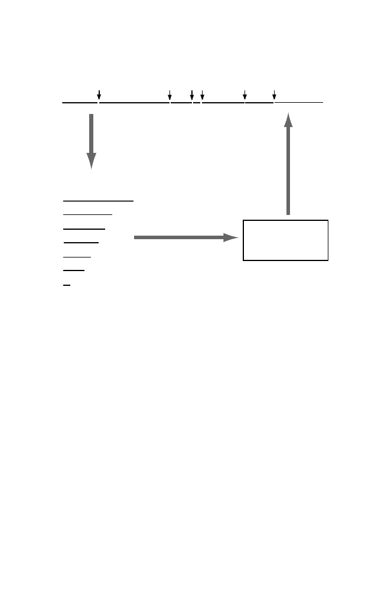

3.1 The Biological Problem
69
A
B
C
D
E
F G
A
B
C
D
E
F
G
Undigested Molecule
Products:
Digest with
restriction
endonuclease
Determine sizes by
gel electrophoresis
Construct
restriction map
5.0, 3.5, 3.0,
2.5, 2.0, 1.5,
0.5 kb
Fig. 3.1.
Restriction endonuclease digestion (one enzyme) and the corresponding
physical map for a linear molecule. Fragments are labeled in order of decreasing
size, as would be observed after gel electrophoresis. Restriction sites are indicated by
vertical arrows. The order of fragments (D, A, F, G, C, E, B) is originally unknown.
A variety of techniques may be employed to determine this order.
3.1.1 Restriction Endonucleases
Bacteria contain genes for a remarkable collection of enzymes, restriction en-
donucleases. Here is the setting for their discovery. Bacteriophage lambda
grows well on the
E. coli
strain K-12. However, only a very small percentage
of bacteriophages grown on strain K-12 can grow well on
E. coli
strain B.
Most of the phage DNA that infects strain B is inactivated by fragmentation.
However, those few bacteriophages that infect
E. coli
B successfully produce
offspring that can infect
E. coli
B (but not K-12) with high efficiency.
The reason for these observations is that the host DNA in
E. coli
B is mod-
ified (by methylation) in a particular manner. The invading DNA is not modi-
fied in this particular way, and consequently it is broken down. In 1970, Hamil-
ton Smith found that a restriction enzyme that he was studying (
Hin
dII)
caused cleavage of double-stranded DNA in a short specific nucleotide se-
quence. Methylation of a base in the sequence prevented this cleavage. The
recognition sequence for
Hin
dII is